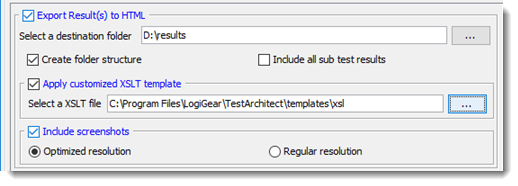
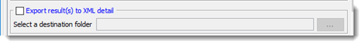

Configuring and running tests from TestArchitect Client
From a TestArchitect Client session, tests can be
configured with the Execute Test dialog box.
Options include
selecting which tests to run, where to run them, how to handle results, and whether to generate
additional diagnostic information during testing. You also have the option to run your test
directly from the dialog box (online execution), or to generate a batch file allowing for a
later test run (offline execution).
Note:
The Execute Test dialog box can be accessed by right-clicking any
test module node in the TestArchitect explorer tree, and then clicking
Execute Test.
The Execute Test dialog box is then presented.
Fastpath: Alternatively, click
F9.
The Execute Test dialog box is then presented.
Execute Test dialog box
Following are the fields of the Execute Test dialog box:
- Test Modules panel: Lists the test modules and
test cases to be executed.
- If a test module is selected, it appears in this box.
- If you select a test folder, all test modules belonging to that folder appear in this box.
- You can expand each test module to specify which tests to execute:
- Individual test cases.
- The INITIAL section of the test module starts before the first test case with the INITIAL action. This section is where you would typically perform initiating operations like launching the application under test and logging into it.
- The FINAL section of the test module starts after the final test case with the FINAL action. You can use the final section to perform some housekeeping before the conclusion of your test, such as logging out of the application.
- The number of executed test modules and test cases is displayed. Note that,
INTIAL and FINAL sections are excluded.
You are now able to be aware when the number of executed tests is too large;
therefore, you might decide whether you minimize that number by selecting only
essential tests to run. Note:
- Applies to TestArchitect 8.3 Update 4 and higher.
- When you deselect some test modules/test cases, the number of selected tests modules/test cases is updated immediately.
- In the Test Modules panel, test
modules and test cases are executed from the top downwards. You might also change the
positions of the test modules in the panel, which means changing the execution order
of test modules. Note: Applies to TestArchitect 8.3 Update 5 and higher.
- Basically, there are two options:
- Option #1: In the Test Modules panel, drag the preferred test modules one after another into the new desired positions.
- Option #2: In the Test Modules panel, select a desired test module and then click the Move Up button or the Move Down button, until the test module reaches the desired position. Repeat for other desired test modules.
Restriction: Moving multiple test modules at once is not allowed.
- Basically, there are two options:
- Save as Test Suite: Use this button to create a static test suite containing the group of test modules listed in the Test Module panel. (Learn more.)
- General tab:
- Settings panel:
- Result Name: The result name together with the timestamp and process ID is used as the title on the test result page. For example, the Result Name is Action Based Testing, the title for the test run page might look like Action Based Testing (2013-04-04 13.54.11) - 5044.
- Comment: (Optional) Allows you to add a comment that will be included in the report generated after the test is executed. The comment value will appear as a field of the result item in the Results subtree of theTestArchitect explorer tree, and can therefore be used to filter or sort your reports.
- Build Number: (Optional) Use to specify the AUT build
number. The build number is displayed in the test result report and can be used as
a filter or sort criteria.Note: During execution, the built-in action assign result fieldcan be used to assign a new value to this field, which changes the build number.
- Automation Tools: Click this button to
set the automation tools (see Lesson #8: Using an automation harness). The following
settings are available for automation tools:
- Playback Tool: Select the automation playback tool.
- Executable(s): Path to the automation playback tool executable file.
- Script(s): Path to the automation script folder.
- Command Line: Add any command line switches you may wish to include to control the third-party tool.
- Controllers/Devices panel:
- Displays the list of target controllers, physical mobile devices, and/or cloud
mobile devices upon which the test will execute.
- If there is exactly one controller/physical device selected, this panel will display its name; otherwise, the number of selected controllers/devices is displayed instead.
- For cloud devices, this panel will display the loaded JSON file which contains desired capabilities of the target cloud devices. (Learn more.)
- Select Controllers/Devices: Click this
button to designate which controller, physical mobile device, and cloud device the
test will execute on.
- Lab Manager Server panel: (Display only) IP and port number of the Lab Manager Server to which the test controllers and devices are registered.
- Controllers/Devices panel: Lists all available
controllers and cloud/physical mobile devices on which the test can be
executed. The list consists of those controllers and devices that are either
registered with the Lab Manager Server or have been manually added with the
Add Controller or Add desired capabilities
files button.Tip: To select multiple cloud devices to be executed at launch time, see the following topics.
- WebDriver based cloud services (Appium enabled).
- In Remote TestKit service
- Controller Port Configuration: Use this panel to
specify to TestArchitect the port number that
the remote machine is using for its TestArchitect Controller, if not using the default.
- IP/Server Name: (Display only) IP address of remote machine currently selected in the Controllers/Devices panel.
- Port: Port number through which TestArchitect will attempt to communicate with the controller on the host specified in the IP/Server Name field. If this is not the port on which the controller is known to be listening, change this value and then click Save .
Note: To run tests on multiple controllers or devices simultaneously, see Multiple device execution for details. - Displays the list of target controllers, physical mobile devices, and/or cloud
mobile devices upon which the test will execute.
- Variation Specification panel:
- Keyword: Keyword, or
comma-delimited list of keywords, specifying the test variation to be executed,
if any. (See Creating keyword variations.)Attention: If the test module selected for execution is a variation, this field is automatically filled in. If multiple test module variations are selected for execution and they do not all feature identical keyword sets, this field is not auto-filled.
- AUT Version: Enter a value or click
the Select Version button to specify a variation tailored
to an AUT version or platform (See Creating linked variations.)
Attention: If the test module selected for execution is a variation, this field is automatically filled in. If multiple test module variations are selected for execution and they do not all feature identical keyword sets, this field is not auto-filled.
- Time Traveling: To opt for time traveling execution, which selects a historical “snapshot” of the test's project items for execution during the test run, select the check box and provide an appropriate timestamp. (See Time Traveling for details.)
- Keyword: Keyword, or
comma-delimited list of keywords, specifying the test variation to be executed,
if any. (See Creating keyword variations.)
- Screenshot recording panel: Use this panel to enable and configure the capturing of screenshots of UI-Interacting actions. For details, see Capturing screenshots during test execution
- Settings panel:
- Advanced tab:
- Export Result(s) to TARESULT: Export test results to
.TARESULT files automatically once the text execution is
complete. (Learn more).
- Include screenshots: Retain all captured screenshots in the exported .TARESULT test result.
- Include all sub test results: If the exported test result is a master result, meaning, it is a test suite result, or it contains subresults, the Include all sub test results check box is available. With this option chosen, the master result and its subresults are all exported into .TARESULT format.
- Export Result(s) to HTML: Export test
results to HTML file automatically once the text execution is complete (learn more).
- Create folder structure: Select whether the folder
structure or flat structure directory is created to
store HTML results.
- Folder structure (the Create folder structure check box is enabled): TestArchitect creates a hierarchical tree structure, or subdirectories to store HTML results.
- Flat structure (the Create folder structure check box is cleared): TestArchitect does not create subdirectories. There is only a single top-level directory that contains all HTML results.
- Include all sub test results: If the exported test result is a master result, that is, it is a test suite result or it contains subresults, the Include all sub test results check box is available. With this option chosen, the master result and its subresults are all exported into HTML files.
- Apply customized XSLT template: Export HTML results with your own view layout.
- Include screenshots: Retain all captured screenshots in the exported HTML
test result.
- Optimized resolution: Included screenshot's dimensions are optimized to save space in the exported HTML test results. Specifically, the screenshots are saved as thumbnail images.
- Regular resolution: Original resolution of included screenshots is retained. Specifically, the screenshots are saved as full size images.
- Create folder structure: Select whether the folder
structure or flat structure directory is created to
store HTML results.
- Export result(s) to xUnit: Export test
results to a XML file automatically in xUnit-format for integrating into the continuous integration tools once the
text execution is complete.

- Export result(s) to XML detail: Export test results to XML
file automatically once the text execution is complete (see Exporting test results to XML for more details).
 - Upload result to <externalTool>: Automatically upload test results to an external test tool, such as, Team Foundation Server-Microsoft Team Manger (TFS-MTM) or HP Quality Center, after the test is terminated.
- Automatically add result(s) to repository: TestArchitect automatically stores the test results,
based on predefined conditions, to a specific location on a repository once the text
execution is complete. (Learn
more.)
- Export Result(s) to TARESULT: Export test results to
.TARESULT files automatically once the text execution is
complete. (Learn more).
- Startup Settings tab: List of custom, user-defined settings to be
created at test run startup, and/or built-in settings that are to be set to your choice of
values at startup.
- Startup Settings: Select this check box to allow the listed built-in settings to be initialized with your values at startup (overriding the TestArchitect defaults), and the user-defined settings to be both created and initialized. (Learn more.)
- Execute: Click this button to start executing selected tests.
Instead of executing the tests, you can use the following:
- Compile Only: Prepare a test execution, but do not start the execution. Automation engineers can use this to test harness scripts in their own development environment.
- Generate Batch File: Generate a batch file (*.BAT file in Windows) to execute the test in command line mode.
Tip: To quickly execute a test module you are working on in the editor, press
F9. This starts the execution without invoking the
Execute Test dialog box.
Share Via...